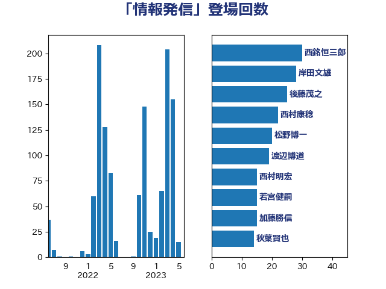

単語「情報発信」

| 西銘恒三郎 | 自由民主党 | 30 回 |
| 岸田文雄 | 自由民主党 | 28 回 |
| 後藤茂之 | 自由民主党 | 25 回 |
| 西村康稔 | 自由民主党 | 22 回 |
| 松野博一 | 自由民主党 | 20 回 |
| 渡辺博道 | 自由民主党 | 19 回 |
| 西村明宏 | 自由民主党 | 15 回 |
| 若宮健嗣 | 自由民主党 | 15 回 |
| 加藤勝信 | 自由民主党 | 15 回 |
| 秋葉賢也 | 自由民主党 | 14 回 |
| 斉藤鉄夫 | 公明党 | 14 回 |
| 浅野哲 | 国民民主党 | 13 回 |
| 山口壯 | 自由民主党 | 12 回 |
| 永岡桂子 | 自由民主党 | 11 回 |
| 堀内詔子 | 自由民主党 | 11 回 |
| 萩生田光一 | 自由民主党 | 10 回 |
| 河野太郎 | 自由民主党 | 10 回 |
| 齋藤健 | 自由民主党 | 9 回 |
| 野田聖子 | 自由民主党 | 9 回 |
| 浜田靖一 | 自由民主党 | 9 回 |
| 浜田聡 | NHK党 | 9 回 |
| 末松信介 | 自由民主党 | 9 回 |
| 馬場雄基 | 立憲民主党 | 8 回 |
| 小島敏文 | 自由民主党 | 8 回 |
| 石井正弘 | 自由民主党 | 7 回 |
| 池畑浩太朗 | 日本維新の会 | 7 回 |
| 岡田直樹 | 自由民主党 | 7 回 |
| 小倉將信 | 自由民主党 | 7 回 |
| 太田房江 | 自由民主党 | 7 回 |
| 下野六太 | 公明党 | 7 回 |
| 音喜多駿 | 日本維新の会 | 6 回 |
| 鈴木英敬 | 自由民主党 | 6 回 |
| 鈴木俊一 | 自由民主党 | 6 回 |
| 金子恵美 | 立憲民主党 | 6 回 |
| 野村哲郎 | 自由民主党 | 6 回 |
| 赤木正幸 | 日本維新の会 | 6 回 |
| 藤井一博 | 自由民主党 | 6 回 |
| 林芳正 | 自由民主党 | 6 回 |
| 川田龍平 | 立憲民主党 | 6 回 |
| 長友慎治 | 国民民主党 | 5 回 |
| 鈴木義弘 | 国民民主党 | 5 回 |
| 葉梨康弘 | 自由民主党 | 5 回 |
| 平山佐知子 | 無所属 | 5 回 |
| 堀井巌 | 自由民主党 | 5 回 |
| 佐藤英道 | 公明党 | 5 回 |
| 高橋光男 | 公明党 | 4 回 |
| 階猛 | 立憲民主党 | 4 回 |
| 金村龍那 | 日本維新の会 | 4 回 |
| 金子恭之 | 自由民主党 | 4 回 |
| 里見隆治 | 公明党 | 4 回 |
| 谷公一 | 自由民主党 | 4 回 |
| 藤木眞也 | 自由民主党 | 4 回 |
| 蓮舫 | 立憲民主党 | 4 回 |
| 菅家一郎 | 自由民主党 | 4 回 |
| 田中健 | 国民民主党 | 4 回 |
| 片山大介 | 日本維新の会 | 4 回 |
| 柴田巧 | 日本維新の会 | 4 回 |
| 木村英子 | れいわ新選組 | 4 回 |
| 山際大志郎 | 自由民主党 | 4 回 |
| 大野泰正 | 自由民主党 | 4 回 |
| 吉田とも代 | 日本維新の会 | 4 回 |
| 中谷真一 | 自由民主党 | 4 回 |
| 鬼木誠 | 立憲民主党 | 3 回 |
| 須藤元気 | 無所属 | 3 回 |
| 道下大樹 | 立憲民主党 | 3 回 |
| 角田秀穂 | 公明党 | 3 回 |
| 西岡秀子 | 国民民主党 | 3 回 |
| 竹詰仁 | 国民民主党 | 3 回 |
| 空本誠喜 | 日本維新の会 | 3 回 |
| 稲富修二 | 立憲民主党 | 3 回 |
| 福重隆浩 | 公明党 | 3 回 |
| 磯崎仁彦 | 自由民主党 | 3 回 |
| 田村憲久 | 自由民主党 | 3 回 |
| 田島麻衣子 | 立憲民主党 | 3 回 |
| 玉木雄一郎 | 国民民主党 | 3 回 |
| 武部新 | 自由民主党 | 3 回 |
| 杉久武 | 公明党 | 3 回 |
| 新妻秀規 | 公明党 | 3 回 |
| 岡本あき子 | 立憲民主党 | 3 回 |
| 山本博司 | 公明党 | 3 回 |
| 小野田紀美 | 自由民主党 | 3 回 |
| 小熊慎司 | 立憲民主党 | 3 回 |
| 安江伸夫 | 公明党 | 3 回 |
| 塩田博昭 | 公明党 | 3 回 |
| 土田慎 | 自由民主党 | 3 回 |
| 國重徹 | 公明党 | 3 回 |
| 勝俣孝明 | 自由民主党 | 3 回 |
| 冨樫博之 | 自由民主党 | 3 回 |
| 中野洋昌 | 公明党 | 3 回 |
| 中川康洋 | 公明党 | 3 回 |
| 高野光二郎 | 自由民主党 | 2 回 |
| 高見康裕 | 自由民主党 | 2 回 |
| 青木愛 | 立憲民主党 | 2 回 |
| 門山宏哲 | 自由民主党 | 2 回 |
| 鈴木敦 | 国民民主党 | 2 回 |
| 舟山康江 | 国民民主党 | 2 回 |
| 自見はなこ | 自由民主党 | 2 回 |
| 羽田次郎 | 立憲民主党 | 2 回 |
| 細田健一 | 自由民主党 | 2 回 |
| 穂坂泰 | 自由民主党 | 2 回 |
| 神谷政幸 | 自由民主党 | 2 回 |
| 神田潤一 | 自由民主党 | 2 回 |
| 礒崎哲史 | 国民民主党 | 2 回 |
| 田所嘉徳 | 自由民主党 | 2 回 |
| 森山浩行 | 立憲民主党 | 2 回 |
| 梅村みずほ | 日本維新の会 | 2 回 |
| 松本剛明 | 自由民主党 | 2 回 |
| 早坂敦 | 日本維新の会 | 2 回 |
| 新谷正義 | 自由民主党 | 2 回 |
| 新藤義孝 | 自由民主党 | 2 回 |
| 庄子賢一 | 公明党 | 2 回 |
| 平木大作 | 公明党 | 2 回 |
| 川合孝典 | 国民民主党 | 2 回 |
| 尾身朝子 | 自由民主党 | 2 回 |
| 小林茂樹 | 自由民主党 | 2 回 |
| 宮崎勝 | 公明党 | 2 回 |
| 大口善徳 | 公明党 | 2 回 |
| 塩川鉄也 | 日本共産党 | 2 回 |
| 吉田久美子 | 公明党 | 2 回 |
| 古川禎久 | 自由民主党 | 2 回 |
| 北側一雄 | 公明党 | 2 回 |
| 伊佐進一 | 公明党 | 2 回 |
| 仁木博文 | 無所属 | 2 回 |
| 井林辰憲 | 自由民主党 | 2 回 |
| 中川宏昌 | 公明党 | 2 回 |
| 中山展宏 | 自由民主党 | 2 回 |
| 上田清司 | 国民民主党 | 2 回 |
| 三浦靖 | 自由民主党 | 2 回 |
| 黄川田仁志 | 自由民主党 | 1 回 |
| 鰐淵洋子 | 公明党 | 1 回 |
| 高橋千鶴子 | 日本共産党 | 1 回 |
| 高木かおり | 日本維新の会 | 1 回 |
| 高市早苗 | 自由民主党 | 1 回 |
| 青柳仁士 | 日本維新の会 | 1 回 |
| 青島健太 | 日本維新の会 | 1 回 |
| 青山大人 | 立憲民主党 | 1 回 |
| 長谷川英晴 | 自由民主党 | 1 回 |
| 鈴木隼人 | 自由民主党 | 1 回 |
| 野間健 | 立憲民主党 | 1 回 |
| 野田佳彦 | 立憲民主党 | 1 回 |
| 野中厚 | 自由民主党 | 1 回 |
| 近藤昭一 | 立憲民主党 | 1 回 |
| 輿水恵一 | 公明党 | 1 回 |
| 赤池誠章 | 自由民主党 | 1 回 |
| 豊田俊郎 | 自由民主党 | 1 回 |
| 谷合正明 | 公明党 | 1 回 |
| 西田実仁 | 公明党 | 1 回 |
| 菊田真紀子 | 立憲民主党 | 1 回 |
| 若松謙維 | 公明党 | 1 回 |
| 芳賀道也 | 国民民主党 | 1 回 |
| 紙智子 | 日本共産党 | 1 回 |
| 簗和生 | 自由民主党 | 1 回 |
| 竹谷とし子 | 公明党 | 1 回 |
| 竹内真二 | 公明党 | 1 回 |
| 石橋通宏 | 立憲民主党 | 1 回 |
| 石川香織 | 立憲民主党 | 1 回 |
| 石川大我 | 立憲民主党 | 1 回 |
| 石垣のりこ | 立憲民主党 | 1 回 |
| 石井啓一 | 公明党 | 1 回 |
| 田村貴昭 | 日本共産党 | 1 回 |
| 田名部匡代 | 立憲民主党 | 1 回 |
| 牧義夫 | 立憲民主党 | 1 回 |
| 牧山ひろえ | 立憲民主党 | 1 回 |
| 漆間譲司 | 日本維新の会 | 1 回 |
| 深澤陽一 | 自由民主党 | 1 回 |
| 浜口誠 | 国民民主党 | 1 回 |
| 浅川義治 | 日本維新の会 | 1 回 |
| 河西宏一 | 公明党 | 1 回 |
| 江島潔 | 自由民主党 | 1 回 |
| 武藤容治 | 自由民主党 | 1 回 |
| 櫻田義孝 | 自由民主党 | 1 回 |
| 横沢高徳 | 立憲民主党 | 1 回 |
| 横山信一 | 公明党 | 1 回 |
| 森本真治 | 立憲民主党 | 1 回 |
| 梅谷守 | 立憲民主党 | 1 回 |
| 柴山昌彦 | 自由民主党 | 1 回 |
| 柳本顕 | 自由民主党 | 1 回 |
| 枝野幸男 | 立憲民主党 | 1 回 |
| 杉本和巳 | 日本維新の会 | 1 回 |
| 本田顕子 | 自由民主党 | 1 回 |
| 本田太郎 | 自由民主党 | 1 回 |
| 徳永エリ | 立憲民主党 | 1 回 |
| 後藤祐一 | 立憲民主党 | 1 回 |
| 岬麻紀 | 日本維新の会 | 1 回 |
| 岩谷良平 | 日本維新の会 | 1 回 |
| 岩田和親 | 自由民主党 | 1 回 |
| 岩本剛人 | 自由民主党 | 1 回 |
| 山田美樹 | 自由民主党 | 1 回 |
| 山田勝彦 | 立憲民主党 | 1 回 |
| 山本香苗 | 公明党 | 1 回 |
| 山本太郎 | れいわ新選組 | 1 回 |
| 山本佐知子 | 自由民主党 | 1 回 |
| 山岡達丸 | 立憲民主党 | 1 回 |
| 山口那津男 | 公明党 | 1 回 |
| 山下芳生 | 日本共産党 | 1 回 |
| 小野泰輔 | 日本維新の会 | 1 回 |
| 小泉進次郎 | 自由民主党 | 1 回 |
| 寺田稔 | 自由民主党 | 1 回 |
| 宮路拓馬 | 自由民主党 | 1 回 |
| 宮崎雅夫 | 自由民主党 | 1 回 |
| 奥下剛光 | 日本維新の会 | 1 回 |
| 太栄志 | 立憲民主党 | 1 回 |
| 大椿ゆうこ | 立憲民主党 | 1 回 |
| 大岡敏孝 | 自由民主党 | 1 回 |
| 堀場幸子 | 日本維新の会 | 1 回 |
| 国定勇人 | 自由民主党 | 1 回 |
| 和田有一朗 | 日本維新の会 | 1 回 |
| 吉田はるみ | 立憲民主党 | 1 回 |
| 北神圭朗 | 無所属 | 1 回 |
| 加藤明良 | 自由民主党 | 1 回 |
| 伊藤孝江 | 公明党 | 1 回 |
| 井野俊郎 | 自由民主党 | 1 回 |
| 亀岡偉民 | 自由民主党 | 1 回 |
| 中谷一馬 | 立憲民主党 | 1 回 |
| 中西祐介 | 自由民主党 | 1 回 |
| 中川貴元 | 自由民主党 | 1 回 |
| 中島克仁 | 立憲民主党 | 1 回 |
| 上野通子 | 自由民主党 | 1 回 |
| 上川陽子 | 自由民主党 | 1 回 |
| 三浦信祐 | 公明党 | 1 回 |
| 三原じゅん子 | 自由民主党 | 1 回 |
| 三上えり | 立憲民主党 | 1 回 |
| 一谷勇一郎 | 日本維新の会 | 1 回 |